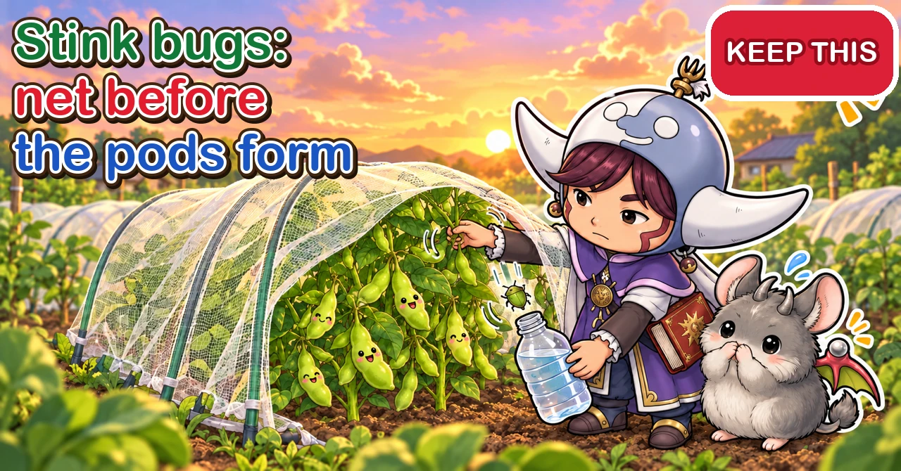

Stink bugs Net the beans before the pods form

"My edamame pods just won't fill out."
"The young pods turn yellow and drop off one by one."
"I finally picked them and there were hardly any beans inside."
Hello, I'm Eiko. Eight years of growing vegetables organically and without pesticides, and a teaching licence in science.
If you've grown edamame, you may know this one. The pods won't swell. They turn yellow and drop. And when you finally harvest, the pods are nearly empty. Very often, the culprit is stink bugs.
Stink bugs don't chew holes in the leaves, so the damage is easy to miss. And because they let off a strong smell when touched, people hesitate to pick them off. By the time you notice, the beans inside the pods may barely have grown. This article goes through the kinds of stink bug and how to recognise their damage, when they arrive, how to find them, how to catch them without the smell, how to prevent them with insect netting, what to watch for on other crops, and how to keep them out of the house in autumn.
Looks like: young edamame pods that yellow and drop; pods that stay flat; pods with small or no beans; beans with dark stains or dents; plants that stay green and won't die back at harvest time. No holes in the pods — holes mean a caterpillar, not a stink bug.
Where you are: stink bugs are a worldwide problem on beans. In North America the brown marmorated stink bug — the same species as one of Japan's commonest, below — has become a well-known invader of gardens and houses. In Britain the green shield bug is common, and the southern green shield bug, one of the bean pests in this article, has become established in and around London.
What to do: cover the plants with insect netting before they flower, or at the latest before the pods form; look for egg clusters on the undersides of leaves; in the morning or evening, shake the plants over a bottle with a little water in it; clear weeds around the plot; go easy on fertiliser, especially nitrogen.

What this diagram says （図解の文字）
- They suck the beans through the pod wall
- "Signs of damage": "Pods turn yellow and drop" ／ "Pods don't fill out" ／ "No beans inside" ／ "Stains on the beans" ／ "They suck with a straw-like mouth"
- "Kinds you'll often see": "bean bug (Riptortus)" ／ "Piezodorus" ／ "green stink bugs (Nezara)" ／ "winter cherry bug (sweet potatoes, aubergines)"
- "A hole in the pod means a moth caterpillar"
- "No holes in the leaves, so you notice late"
① The quick version
Signs of damage (edamame)
- Young pods turn yellow and drop
- Pods don't fill out and stay flat
- Beans inside are small, or missing
- Beans have dark stains or dents
- At harvest time the plants stay lush and green and won't die back
When and what time of day
- They move into bean plots from midsummer; damage is worst when that overlaps with pod set
- Numbers peak from late summer into autumn (one survey found mid-September to mid-October)
- They're sluggish in the morning and evening
What to do
- Put insect netting on before flowering, before the pods form
- Look for egg clusters under the leaves and remove them
- In the morning or evening, shake the plants and catch what falls
- Clear weeds around the plot
- Don't overdo fertiliser, especially nitrogen
② What stink bugs are
Sap-suckers
Stink bugs have a long, thin mouth like a straw. They push it into stems, leaves, pods and fruit and suck out the juice. They don't chew holes in leaves, so from a distance the damage is hard to see.
Touch them and they smell
When a stink bug feels threatened, it releases a strongly smelling liquid. Grab or squash one and the smell gets on your hands and clothes and is slow to go. When you catch them, you need a way to avoid touching them directly.
They love the bean family
Some stink bugs are especially fond of bean-family crops. They gather on the pods of edamame, soya beans, adzuki beans and green beans, push their mouths in from outside the pod and suck the juice from the beans inside. These are sometimes grouped together as "seed-sucking bugs".
Kinds you'll often see in Japan
- Bean bug (Riptortus pedestris): slim and brown. A regular on beans, and a strong flier
- Piezodorus hybneri: green, with a band across its back. Found on beans
- Green stink bugs (Nezara antennata and the southern green stink bug, N. viridula): green all over. On beans and many other vegetables. The southern green stink bug is said to be spreading north in recent years
- Brown marmorated stink bug (Halyomorpha halys): mottled brown. On many vegetables and fruit trees, and often comes indoors in autumn
- Winter cherry bug (Acanthocoris sordidus): flat, greyish-brown. Gathers in groups on sweet potatoes, aubergines and peppers
They differ a little in looks and in which crops they visit, but the way to deal with them is much the same.
③ Recognising the damage
Edamame pods
How the damage shows depends on what stage the pod was at when it was sucked.
- Sucked as the pods start to lengthen: the pods yellow and fall. Hard to tell apart from the plant naturally shedding some pods
- Sucked as the beans start to swell: the beans don't grow and the pods stay flat. Inside, the beans are missing or small
- Sucked after the beans have swollen: dark stains, dents or misshapen beans
Plants that stay green
When a lot of pods are sucked, the plant has fewer beans to fill, and at harvest time the leaves can stay green and refuse to die back. Japanese growers call this aodachi, "standing green". It's most noticeable when you grow soya beans to harvest dry.
Telling it from other causes
Stink bugs aren't the only reason pods fail to fill.
- Dry soil at flowering: flowers and pods drop more easily
- Too much fertiliser: lots of leaf, few pods
- Heat: flowers drop more easily
- Stink bugs: pods start to grow, then yellow halfway or stay flat — and there are stink bugs about
If pods set and then stop growing, suspect stink bugs. Shake the plants in the morning or evening and see if any fall.
A hole in the pod means a different pest
If there's a small hole in the pod and the beans inside have been eaten, that's not a stink bug but a moth caterpillar that bores into the pod. Stink bugs only suck, so they leave no obvious hole.
- No hole, beans undeveloped or stained: stink bugs
- A hole, beans nibbled, droppings inside: moth caterpillars
Caterpillars also get in while the pods are small, so insect netting prevents both.
Tomatoes and aubergines
When a tomato is sucked, the spot can turn pale or yellowish and blotchy, and the flesh underneath can go spongy. Peppers and aubergines can show small dents and stains.
Spring broad beans too
Stink bugs also sit at the base of broad bean pods in spring and suck them. Sucked pods grow poorly or spoil. Picking off any you find in spring also means fewer moving on to your edamame in summer.
④ When they arrive
From midsummer into autumn
Stink bugs are active from spring, but damage to edamame shows up from midsummer into autumn. One survey of bean fields found them starting to move in from around mid-August and building up from mid-September to mid-October. (That's central Japan — shift it to match your own summer.)
Once the rainy season ends and it turns hot, numbers jump and you start seeing them everywhere. When that coincides with pod set, the damage is heavy.
The stage to protect
For edamame, the risky stretch is from flowering, through pod set, to the beans swelling — a little over a month. That's the period to guard most carefully.
Net before the wet
Stink bugs mate around mid-June to July here, and numbers jump after the rains. It's hard to put up netting in the rain, so get it on the edamame before the wet spell starts.
Choosing varieties and timing
Edamame comes in early varieties you sow early and pick early, and late varieties you sow later and pick in autumn.
- Early variety, sown in spring: pods are more likely to form before the stink bugs build up. Good if it's your first time and you're worried about them
- Late variety, sown in summer: picked in autumn and often prized for flavour, but pod set falls in peak stink-bug season. Netting and patrols are essential
Use the sowing time and "days to harvest" on the seed packet to work back to when the pods will form, and see whether that clashes with the busy season.
⑤ Finding them
Go out morning or evening
In the heat of the day stink bugs fly about readily. In the cool of morning and evening they're sluggish — easier to find and easier to catch.
Shake the plant over a catcher
When threatened, stink bugs pull in their legs and drop straight down. Use that.
- Hold a plastic bottle with a little water in it, or an open bag, under the plant.
- Gently shake the plant.
- Catch the bugs as they drop.
Reach straight for them and they'll fly off or release their smell. Get the catcher in place first, then shake.
Look for eggs under the leaves
Stink bugs lay clusters of small eggs, neatly lined up, on the undersides of leaves — sometimes on nearby cucumbers as well as the edamame. Turn the leaves over one by one, and when you find a cluster, take the whole leaf. Eggs don't smell.
Where do they lay?
You'll find two explanations: that they lay on the undersides of edamame and cucumber leaves, and that they rarely lay on edamame at all but breed on weeds or other crops and fly in. It probably depends on the species. Either way, check both the edamame leaves and nearby cucumber-family plants and weeds, and you'll miss less. Clearing weeds round the plot also removes places to lay.
Newly hatched nymphs
Just-hatched nymphs cluster around the empty eggs. They have no wings and can't fly, so at this stage it's easy to take the whole leaf or pick them up with tape.
An edamame patrol, step by step
- In the morning or evening, take a bottle with a little water in it and some sticky tape to the plot
- Lift the edge of the netting on one side only
- Hold the bottle mouth under a plant and shake gently; drop the fallen bugs inside
- Look closely at where the pods join the stem and where they cluster
- Turn over a few leaves to check for egg clusters; take the leaf if you find one
- Look for yellowed or flat pods. More of them means more stink bugs
- Put the netting back and check there are no gaps
During pod set, a patrol every 2–3 days catches them before numbers build.
Keep a note
Jot down the date, how many you found and on which plants. Next year you'll know when they start to build up, which helps you decide when to net and when to sow.
Getting rid of the catch
Keep the lid on the bottle and dispose of it according to your local rules. If you tip them out at the edge of the plot, they may come back. Wrap tape and all in a bag and tie it shut.

What this diagram says （図解の文字）
- Shake them off morning or evening, without the smell
- "Morning or evening, when they're sluggish"
- "How to catch them": "Hold a catcher below, then shake" ／ "Pick them up with sticky tape" ／ "Don't touch them with bare hands"
- "Take egg clusters leaf and all"
- "When threatened, they drop straight down"
⑥ Catching them without the smell
Into a bottle of water
- Fill an empty plastic bottle about a third with water
- Hold the mouth under the plant and shake; let the bugs fall inside
- You can also pick them off with chopsticks or tweezers and drop them in
- Screw the lid on and shake hard; they stop moving
- Empty it when it fills up
Even if they release their smell inside, very little escapes with the lid on.
Sticky tape
Wrap masking tape or packing tape round your hand, sticky side out, and press it onto the bug. Then put the tape in a bag and tie it. You never touch the bug, so your hands don't smell. It also works for bugs that have dropped to the ground.
No bare hands
Pick one up with bare fingers and the smell lingers. Use gloves, chopsticks, tweezers or tape.
⑦ Prevention
1. Insect netting before the pods form
For edamame, insect netting is the most reliable protection.
- Put it on before flowering, or at the latest before the pods form. About four weeks after sowing is a safe time
- Before you cover them, check the undersides of leaves for eggs and the plants for bugs
- Push the hoops in firmly and deep
- Weigh the edges down with soil so there are no gaps
Edamame sown in July, which sets pods in late summer and autumn, especially needs netting.
Lift the netting as they grow
When the plants start pressing against the roof of the tunnel, pull the hoops up a little, or push a 3 ft (90 cm) stake lightly into the middle of the row to lift the netting. Leaves pressed against the mesh can be sucked through it from outside.
Don't let them go dry while the beans swell
Edamame needs a lot of water once the pods have set and the beans are swelling. If the soil dries out now, the beans may never fill — and stressed plants suffer more from stink bugs, too.
- Scratch into the soil by the stem with a finger; if it's dry, water
- Water generously, running it along the paths between rows
- If it's damp when you dig, no need to water
2. Clear weeds around the plot
Stink bugs also breed in weedy patches and in resting beds full of weeds. With weeds thick around your plot, they move in more easily. Keep the weeds round the bean bed cut short.
3. Go easy on fertiliser
Edamame can take in nitrogen with help from bacteria living on its roots, so it needs little fertiliser. Lots of nitrogen gives lots of leaf, fewer pods — and draws stink bugs and other insects. Keep base fertiliser very light.
4. Mind the lights
Stink bugs and other insects can be drawn to lights at night. If there's a light that stays on all night right next to your plot, insects gather round it and drop into the nearby beds. If you grow beans near one, net them early.
They have natural enemies
Birds, mantises, spiders and tiny wasps that lay their eggs in stink-bug eggs all keep them in check. A slightly wild, grassy corner helps these predators settle. But the weeds right next to the beans also shelter stink bugs, so keep the bean bed's surroundings cut and put the wild corner at the far edge of the plot.
5. Deterring with scent
Some gardeners spray a weak peppermint-oil solution on the leaves to keep stink bugs away.
- A few drops of peppermint oil to 2 cups (500 ml) of water
- Peppermint oil doesn't mix well with water, so stir it into a little alcohol first, then add the water
- No need to drench the leaves — a spray here and there
Scent deterrents don't last and wash off in rain. They don't replace netting and patrols — think of them as an extra. Some people also stand a pot of mint at the edge of the plot. Keep mint in its pot; planted out, it spreads everywhere.
Light traps at night
Because many stink bugs come to lights at night, some people make a trap from a plastic bottle with slits cut for an entrance, a small light and something sweet-smelling inside, and set it out at night. How many it catches depends on the place and season. A light in the middle of the plot can also draw them in from round about, so if you try it, put it a little away from the beds.

What this diagram says （図解の文字）
- Protect them before the pods form
- "Prevention": "Net before they flower" ／ "Lift it when the plants touch" ／ "Cut the weeds around the plot" ／ "Go easy on fertiliser"
- "Autumn: keep them out of the house": "Shake out the washing" ／ "Seal the gaps"
- "Netting and patrols come first; home-made sprays are an extra"
⑧ Crop by crop
Edamame, soya beans and adzuki beans
The crops that suffer most. Net them before flowering, and once the pods set, patrol morning and evening. The later you harvest, the longer they're exposed, so pick edamame promptly once the pods are plump.
Edamame, stage by stage
- Sowing: have the hoops and netting ready
- Seedlings growing: birds also go for new shoots, so protect them with netting or fleece
- Plants growing, before flowering: netting on by now at the latest; check leaf undersides first
- Flowering and pod set: the risky stretch begins; patrol morning and evening
- Pods swelling: don't let them go dry; check there's headroom under the netting
- Harvest: pick as soon as the pods are plump
Netting before flowering and patrols during pod set — get those two right and most of the job is done.
Pinching out and netting
Tall late varieties give more side shoots, and more pods, if you pinch out the tip once they reach a certain height. Net them straight after pinching out and the jobs flow neatly into one another.
Don't miss the moment
Edamame is ready when the pods are plump and the beans well formed. Leave them too long and the beans harden and lose flavour — and the bugs get longer to feed. Once plenty of pods are plump, harvest.
Growing soya or adzuki beans to dry
If you leave the pods to dry for soya or adzuki beans rather than picking them green, the pods stay in the ground right through peak stink-bug season in autumn. Leave the netting on until harvest and keep up the autumn patrols. With many pods sucked, the plants "stand green" and are awkward to harvest.
Green beans
Green bean pods get sucked too; they become blotchy or crooked. Check the pods and pick off any bugs.
Sweet potatoes
From late summer into autumn, winter cherry bugs can gather in groups under sweet potato leaves, sitting at the leaf stalks and sucking sap. Checking every leaf in a dense patch is hard work, so concentrate on leaf stalks and the vine tips. Pick them off when you see them, so the smell doesn't spoil your harvest day.
Aubergines, peppers and tomatoes
Stink bugs also suck the leaves and fruit of the tomato family. If small dents or stains appear on the fruit, look for bugs nearby. Winter cherry bugs gather in groups on aubergines too.
Cucumbers and their relatives
Stink bugs sometimes lay eggs under cucumber leaves. If you only watch the edamame, eggs can hatch on the cucumbers next door and the numbers build from there. Check under the leaves of any cucumber-family plants near the beans too.
Broad beans
In spring, stink bugs sit at the base of broad bean pods and suck them, and those pods spoil or grow poorly. Catching them in spring also means less damage to summer edamame.
Peppers and shishito
Small dents and stains can appear on the fruit. Check under the leaves for egg clusters too. Bushy plants hide them, so thin out crowded stems to see through.
Okra
Stink bugs visit okra pods too, leaving small stains or wart-like bumps. Check for them as you harvest.
⑨ Containers and balconies
Stink bugs fly in to balconies too. With only a few plants in a container, damage to each one stands out.
- Cover them with small hoops and netting from before flowering
- Or use a bag-style net that slips over the whole container
- Balconies are easy to patrol morning and evening — shake the plants over a catcher
If you grow them near where you hang the washing, stink bugs will land on the clothes, so give everything a good shake as you bring it in.
⑩ Keeping them out of the house in autumn
Looking for winter quarters
As autumn deepens, some stink bugs look for somewhere to spend the winter and gather on house walls, in gaps round windows and in the washing. Houses near vegetable plots see more of them indoors in autumn.
Watch for the southern green stink bug
The southern green stink bug, once commoner in warm regions, is said to be widening its range in recent years. It feeds on beans and many other vegetables. If you start seeing more all-green stink bugs, be extra careful with netting and patrols on your beans.
Keeping them out
- Shake out the washing as you bring it in and check for bugs
- Seal gaps in window screens and frames
- If you find one indoors, don't squash it — use a bottle or sticky tape
- Clear the plot early so you don't leave plants for them to gather on
⑪ Through the year (central Japan)
- April–May: sow edamame. An early crop picked in July tends to avoid the busy season
- June: about four weeks after sowing, put the netting on; check leaf undersides first
- July: numbers rise after the rains. Net July-sown edamame before the pods form
- August: stink bugs move into bean plots. Patrol morning and evening; remove egg clusters
- September–October: peak season. Take special care with autumn edamame and soya beans; watch for winter cherry bugs on sweet potatoes and aubergines
- October–November: watch for them coming indoors; clear the plot early
⑫ Where growers disagree, and common mistakes
Do home-made sprays work? All sorts are recommended: peppermint oil in water, chillies steeped in spirits, and more. Some people say chilli didn't keep them away but peppermint did. None has been clearly proven. Rely on netting and patrols; treat home-made sprays as an extra.
How long should the netting stay on? Edamame sets pods without insects carrying its pollen, so it can stay covered. Leaving the netting on right up to harvest is safest.
Early sowing or late? One view is to sow early and finish before the bugs build up; on the other hand, late-sown autumn edamame is often prized for flavour. If you sow late, don't skip the netting and patrols.
Common mistakes:
- Netting after the pods have formed — if bugs or eggs are already on the plants, the damage carries on under the net. Net before pod set, and check the plants first
- Trying to catch them at midday — they're lively and fly off. Go in the morning or evening
- Grabbing them barehanded — use gloves, chopsticks, tape or a bottle of water
- Feeding edamame heavily — lots of leaf, fewer pods, more insects. Keep base fertiliser light
- Leaving the harvest late — the longer the pods are out, the longer they can be sucked. Pick when plump
⑬ Questions people ask
Can I eat beans from sucked pods? Sucked beans may be undersized or stained, but they're fine to eat. Cut away stained parts if they bother you.
There's a ladybird-like bug. Is it a stink bug? Most stink bugs are flat, with a back shaped like a five-sided shield, and they smell. Ladybirds are round and dome-shaped. Look at the shape.
The pods are yellowing and dropping, but I can't see any stink bugs. Early on, plants adjust their own load by shedding some young pods. Dry soil and heat also make pods drop. Shake the plants in the morning or evening to check; if there are none, look again at watering and heat. Stink bugs fly in and out, so they may visit morning and evening even if you never see them at midday.
Are vegetables that had stink bugs on them safe to eat? Remove the bugs and wash the vegetables well and they're fine. If a smell lingers, cut that part away.
I got the smell on my hands. Even after a good wash with soap it can linger for a while. Next time, use gloves, chopsticks or tape. Wash any clothes that caught it promptly.
Can I get rid of them completely without pesticides? No — they fly in from outside the plot. The goal is to keep them away during pod set and to remove arrivals quickly. Netting before the pods form cuts edamame damage a great deal.
There are stink bugs inside the netting. They were probably on the plants before you covered them, or got in under the edges. Lift the edge in the morning or evening, shake the plants and catch them, then seal the gaps again.
What mesh size for edamame netting? Stink bugs are fairly large, so ordinary insect netting of around 1 mm mesh keeps them out. Newly hatched nymphs and other small insects can squeeze through gaps, though. Sealing the edges and checking the plants before covering matter more than the mesh size.
Won't netting stop pollination? Edamame pollinates itself inside its own flowers, so it doesn't need insects. Pods set fine under netting. Leave it on until harvest.
My plot gets lots of stink bugs every year. There may be weedy ground or trees they like nearby. Combine early sowing, netting without fail before pod set, and cutting the weeds around the plot.
Science bit: five whys 🔬
How can they suck the beans through the pod? A stink bug's mouth is a long straw made of several fine needles bundled together. It pushes this through the pod wall until it reaches the bean, then sucks. As it feeds it may inject a liquid that dissolves the bean's contents, so sucked beans fail to grow or develop stains. From outside, you can hardly see where the pod was pierced — which is why you only notice when the beans haven't grown.
Why do they smell? The smell is thought to protect them from birds and other predators. A strong-smelling liquid says "I taste awful" and keeps enemies away. It's also said to work as an alarm signal to other stink bugs.
Why do they come indoors in autumn? Most stink bugs spend the winter as adults. To get through the cold they need somewhere out of the wind where the temperature doesn't drop much. As autumn cools, besides leaf litter and gaps under bark, they gather on sunny house walls, in gaps round windows and in washing on the line — anywhere warm and snug. The ones that come inside are on their way to winter quarters.
Why does heavy feeding draw them in? With lots of nitrogen, a plant's sap carries more of the building blocks for protein. To a sap-sucking insect that's richer, tastier sap. And when leaves grow too dense, the inside of the plant becomes dark and still, giving insects places to hide. Going easy on fertiliser for edamame isn't only about getting more pods — it also makes the plants less inviting.
Why do they drop? When threatened, stink bugs pull in their legs and fall. If a predator spots them on a leaf, dropping into the undergrowth below is thought to be a quicker escape than taking off. Shaking the plant over a catcher turns that habit against them.
To sum up
- ✅ Stink bugs push their mouths through the pod and suck the beans. Beans such as edamame suffer most
- ✅ Signs: young pods yellow and drop, pods stay flat, beans missing or stained
- ✅ They move in from midsummer; one survey found a peak from mid-September to mid-October
- ✅ In the morning or evening, hold a catcher under the plant, shake, and catch what falls
- ✅ Catch them without the smell using a bottle of water or sticky tape. No bare hands
- ✅ Take egg clusters under the leaves leaf and all
- ✅ Net before the pods form. Cut weeds around the plot and go easy on fertiliser
- ✅ Winter cherry bugs gather in groups on sweet potatoes and aubergines
- ✅ In autumn they come indoors. Shake out the washing and seal the gaps
- ✅ Don't let edamame go dry while the beans swell; stressed plants suffer more
- ✅ Net before the rains; lift the netting when the plants touch it
- ✅ A hole in the pod means a moth caterpillar, not a stink bug
Stink bugs are a nuisance: by the time you notice, the beans haven't grown, and the smell makes you reluctant to pick them off. But once you know when they come and how they behave, protecting your crop is straightforward. Netting before the pods form, morning and evening patrols during pod set, and the right balance of water and fertiliser — keep those three going and you should be picking plenty of plump pods. Next time you sow edamame, make "net before flowering" part of the plan from day one
Thank you for reading!